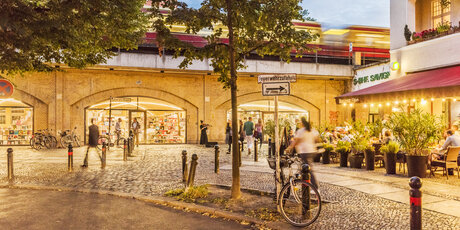

Vietnamese
In Kantstraße you can find excellent Vietnamese restaurants such as Madame Ngo
Japanese
Another iconic restaurants is Kuchi,
as well as the Michelin awarded Ryotei 893.
Do you know who is the owner and chef of these restaurants?
Discover his fascinating story here
Thai
This excellent Thai restaurant also offers cooking courses! Dao by Meo,
What about you?
Hidden gems
Select neighborhood:
Select cuisine:
